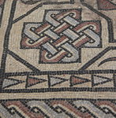
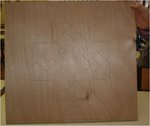
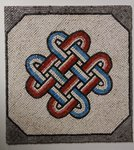

Le collège de l’Isle à Vienne dans l’académie de Grenoble fait de très nombreuses activités autour des mathématiques, ateliers centrés sur l’art et la science, préparation aux concours du kangourou, olympiades, cryptographie et histoire des mathématiques... Je laisse la parole à Marc Troudet, leur enseignant de mathématiques :
- 
- L’originale au musée d’Arles
{kind=link}
Cet entrelacs est un motif d’une mosaïque polychrome, conservée au musée d’Arles antique, découverte en 1983 sur le site de la verrerie à Trinquetaille, elle date de la fin du IIème –début du IIIème siècle après JC.
Vue la difficulté présentée par l’entrelacs, les élèves ont travaillé à partir d’une photo et d’un programme de construction. Le motif géométrique a été construit à la règle et au compas sur une planche en bois par Lucile, élève de 6ème ;
- 
- La planche avec les constructions.
{kind=link}
De deux à trois élèves ont ensuite collé les mosaïques tesselles. La réalisation de la mosaïque a nécessité au total 32 heures d’atelier entre octobre 2013 et mars 2014 !
- 
- La mosaïque de l’entrelacs terminée
{kind=link}
Deux heures et demie par semaine, une quarantaine d’élèves de l’atelier mathématique du collège de l’Isle à Vienne (38) viennent étudier l’art du décor géométrique dans les zelliges et les mosaïques antiques de la vallée du Rhône. Leur activité commence par une phase d’analyse des photos de mosaïques.
Selon leur difficulté, un programme de construction peut leur être fourni. Réflexion sur les proportions de la figure, rigueur dans la manipulation des instruments géométriques, précision du trait lors des constructions, répartition des tâches au sein des groupes d’élèves sont alors nécessaires à la réalisation d’une mosaïque.
Les œuvres proposées permettent également d’effectuer des éclairages et des croisements entre les mathématiques et les autres disciplines. Au sein des « arts du visuel », on y aborde, par exemple, les questions des constructions en pavages ou de la représentation de la perspective. Elles permettent également une incursion dans la culture scientifique et technique de l’Antiquité et de la civilisation arabo musulmane.
Une fois effectuée la phase de construction de trames géométriques, les élèves terminent leurs mosaïques par une mise en couleur avec posca, un collage de tesselles céramiques,… puis les réalisations sont exposées.
Lien sur le site du collège